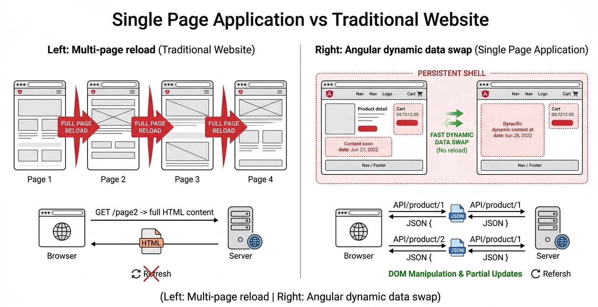

In the early days of the web, websites were static. This means every page was fixed — users could only read content without interacting much. Each time you clicked a link, the browser would reload an entirely new page.
As user expectations grew, developers started building dynamic web applications. These applications could update content instantly without reloading the whole page. Examples include dashboards, social media feeds, and online shopping carts.
This shift created the need for frameworks like AngularJS, which made building dynamic applications easier and more organized.
A Single Page Application (SPA) is a type of web application that loads only one HTML page and dynamically updates content as the user interacts with it.

(Left: Multi-page reload | Right: Angular dynamic data swap)
Key Features of SPAs:
Example: Instead of loading a new page when clicking "About", the content changes instantly within the same page shell.
Routing is the process of navigating between different views in an application. In traditional websites, clicking a link causes a flicker because the whole HTML page is reloading. In AngularJS, clicking a link updates only a section of the page, resulting in no reload and a seamless transition.
Why No Flicker?
AngularJS updates only the required part of the page using JavaScript, instead of reloading everything.
Benefits:
As applications grow, code can become messy. AngularJS solves this using the MVC (Model-View-Controller) pattern.
[Image of Model View Controller architecture diagram]1. Model: Manages the data (e.g., User details).
2. View: What the user sees (e.g., HTML page).
3. Controller: Connects Model and View; handles logic.
Why MVC? It keeps code organized, easier to maintain, and prevents the dreaded “spaghetti code” where logic and design are tangled together.